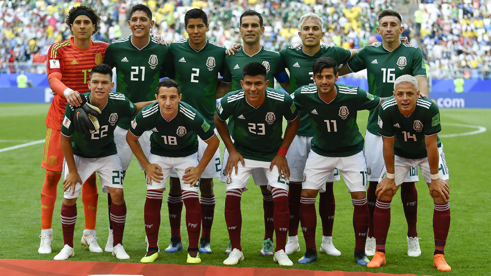

Ranking FIFA: 13° (octubre 2022).
¿Cómo se clasificó al Mundial? Como 2° del octogonal final de las Eliminatorias de la Concacaf.
Rendimiento en 2021 (G-E-P): 13-5-6 (41 GF, 23 GC, +18).
Rendimiento en 2022: 7-5-3 (15 GF, 10 GC, +5).
Guillermo Ochoa
Néstor Araujo
César Montes
Gerardo Arteaga
Julio Domínguez
Andrés Guardado
Héctor Herrera
Edson Álvarez
Hirving Lozano
Raúl Jiménez
Alexis Vega.
Nacionalidad: argentino.
Edad: 59 años (cumplirá los 60 en Qatar, en noviembre).
Contratado: 7 de enero de 2019.
Récord en el cargo (G-E-P): 38-13-10.
Títulos en el cargo: Copa de Oro 2019.
Victoria más notable: 1-0 sobre Estados Unidos, final de la Copa de Oro 2019.
1930 Uruguay 13°
1934 Italia -
1938 Francia -
1950 Brasil 12°
1954 Suiza 13°
1958 Suecia 16°
1962 Chile 11°
1966 Inglaterra 12°
1970 México 6°
1974 Alemania -
1978 Argentina 16°
1982 España -
1986 México 6°
1990 Italia -
1994 Estados Unidos 13°
1998 Francia 13°
2002 Corea y Japón 11°
2006 Alemania 15°
2010 Sudáfrica 14°
2014 Brasil 10°
2018 Rusia 12°
